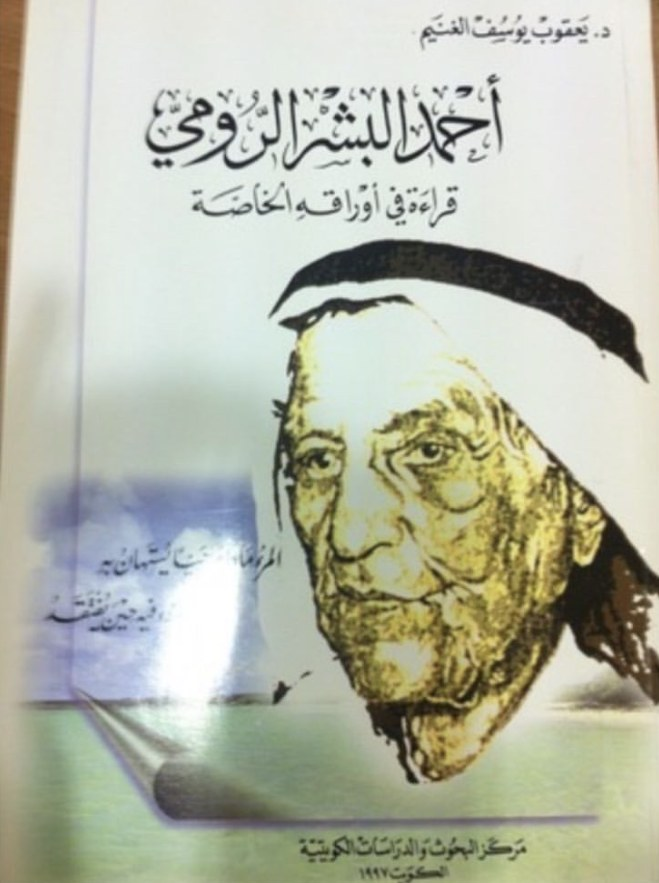
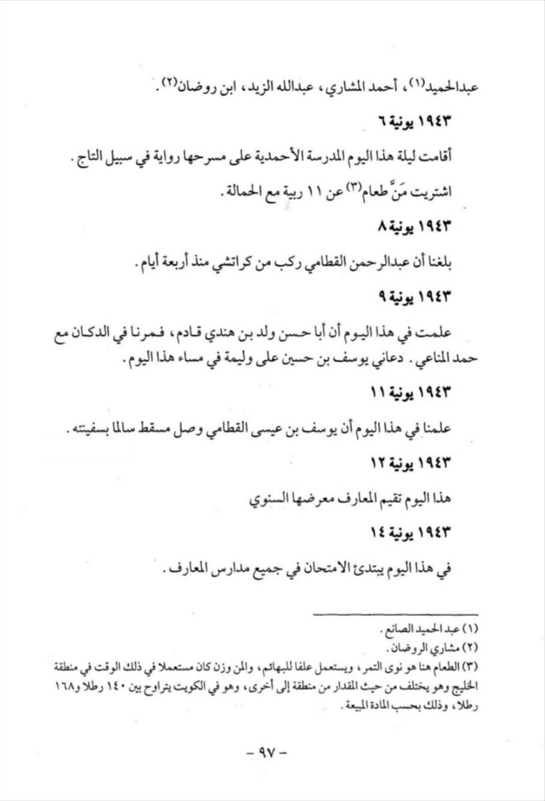

Diaries of 1943 to 1981, published 1997 · Book pages, edited by Dr Yacoub Yousef Al-Ghunaim, Center for Research and Studies on Kuwait, 1997
Ahmed Al-Bishr Al-Roumi's diaries: the Al-Qatami pages
What it is
The private diaries of the writer and teacher Ahmed Al-Bishr Al-Roumi. He records his friend Abdulrahman Al-Qatami's voyages between Karachi, Basra and Bombay in the 1940s, the birth of his daughter Bazgha in 1945 and his visits in London in 1978. He also records Yousef bin Eissa reaching Muscat with his ship in 1943, Abdulwahab bin Eissa's arrival in 1943 and his home in Al-Zubair and Basra, the death of their mother Moza Al-Shaheen in 1945, the marriage of Ahmed Abdulaziz Al-Qatami in 1945, and the death of Yousef bin Eissa in Vienna in 1981.
Why it matters
Dated, first hand entries by a close friend of the family across four decades.
Who is meant
The diaries say only «Abdulrahman Al-Qatami». The family identifies him as the nakhuda Abdulrahman Abdulaziz Al-Qatami, Al-Roumi's friend.
Page copies


Notes
Only the first pages are shown here. Family members who sign in can see all 23 pages.
Others named
Sources
Dr Yacoub Yousef Al-Ghunaim (ed.), Ahmed Al-Bishr Al-Roumi: Qira'a fi Awraqihi Al-Khassa, Center for Research and Studies on Kuwait, 1997
How this text was made: Photographed from the printed page. The captions summarise what each page says.
Open in the interactive site